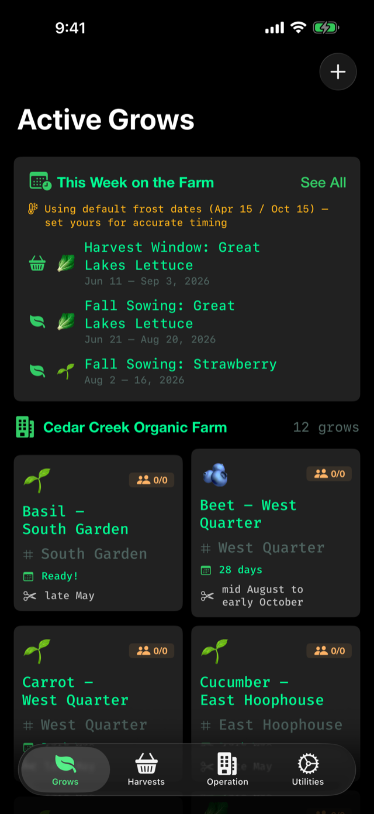
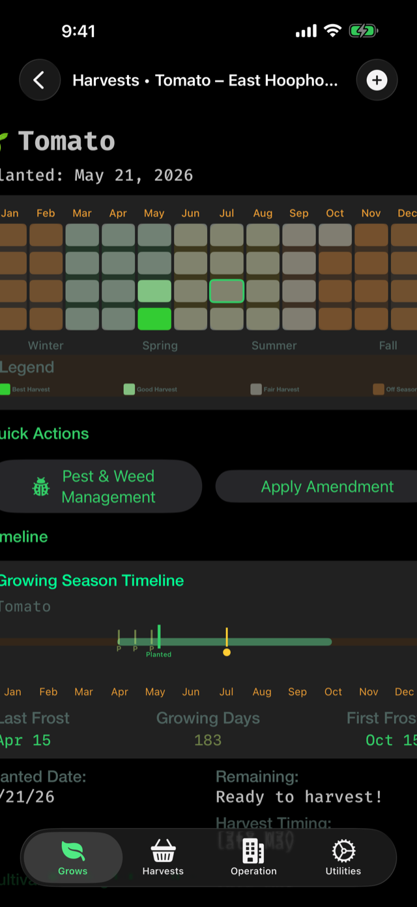
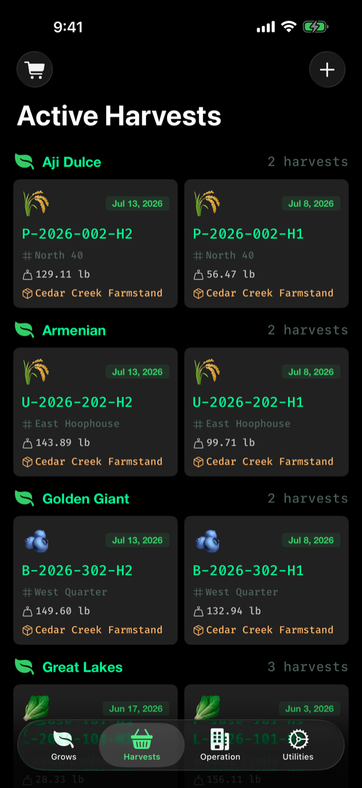
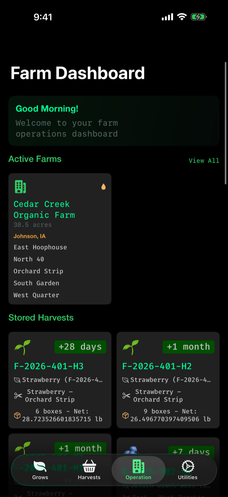
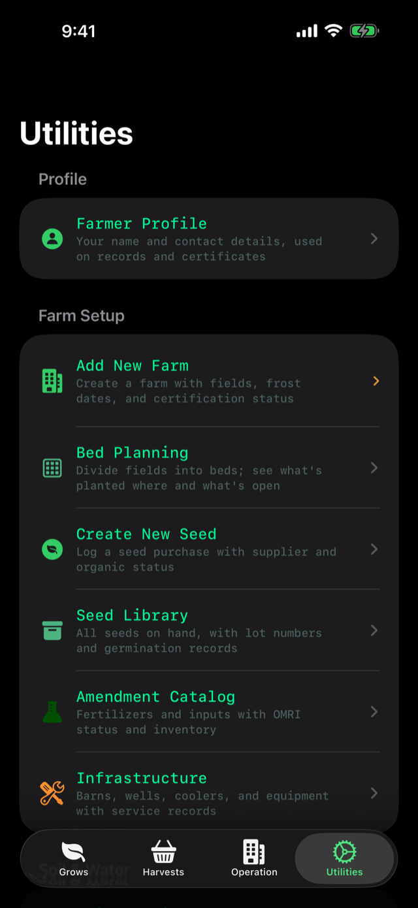
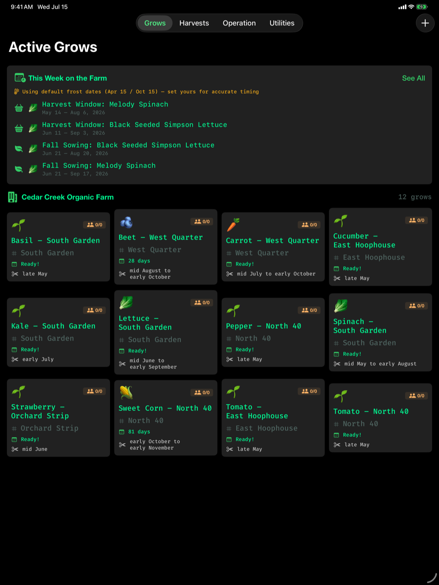

Materials & Practices tracks your grows, amendments, harvests, soil tests, leases, and worker hours — the whole paper trail behind your organic certificate — in one wholesome little app.

Organic certification runs on records. Materials & Practices keeps them all — tidy, traceable, and ready for audit day.
Active and finished grows with timelines, work logs, and harvest windows per field.
Best-to-fair harvest windows for every cultivar, month by month, from USDA data.
Every application logged with source, rate, field, and date — full input traceability.
pH spectrum, nutrients, organic matter, and the labs that ran them — all on file.
Harvest-day food-safety checklists built on FDA FSMA produce-rule requirements.
Multi-worker clock in/out, weekly summaries, and automatic overtime detection.
Agreements, payments, and renewals for every parcel you farm — owned or leased.
Costs and harvest value beside the agronomy, so the books tell the same story.
Real screens from a demo season at Cedar Creek Organic Farm — 38½ acres, five fields, twelve grows.
Open any grow and the harvest calendar is right at the top — best, good, and fair windows for that cultivar across the whole year, with days-to-maturity counting down.

Each harvest gets an ID, a weight, and a home. When a buyer or inspector asks where lot F-2026-401-H2 came from, the answer is two taps away.

Fields, active farms, stored harvests, local weather — the morning walk-through, before you've had your coffee.

The utilities tab holds the working tools: the multi-worker time clock with overtime detection, soil test logs, lease payments, and your cultivar library.

Certifiers don't ask for vibes — they ask for records. Materials & Practices keeps the ones the National Organic Program cares about, organized the way your farm actually works.
No accounts. No servers. No tracking. Your records live on your device, synced privately through your own iCloud — and nowhere else.
Download it and start logging. There is no account to create, no email to hand over, no onboarding funnel.
Records sync between your iPhone and iPad through your personal iCloud (CloudKit). We never see them.
Everything works offline — the cultivar library, the time clock, the checklists. Signal optional.
The same records, laid out for winter planning sessions and side-by-side comparisons.
